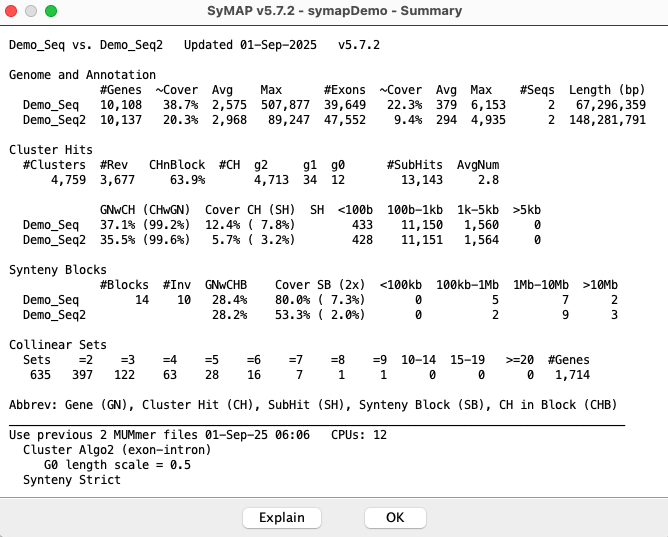
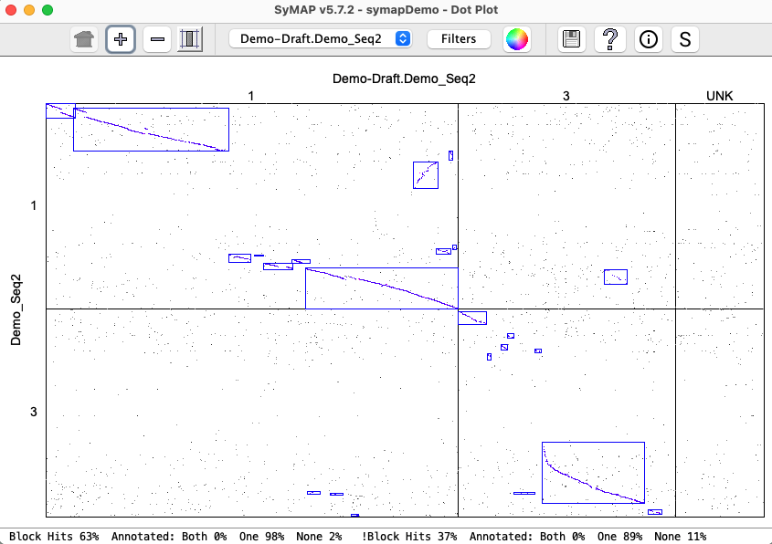

| Demo_Seq-Demo_Seq2 Results | Synteny Results |
The first section provides results from the supplied demo, which is used by System Guide in discussion of running the demo.
The second section describes synteny results using the different options; it uses a chromosome from Arabidopsis thaliana and one from Brassica rapa.
Demo Results
| Two complete genomes | Draft | Self-synteny | symap.log |
This demo was created from real data >15 years ago, and is VERY obsolete - it is strictly for demonstration.
Two complete genomes: Demo-Seq to Demo-Seq2
| Click an image to view a closeup. | |
|
The demo that is provided with the SyMAP tarball has the projects The project This section discusses the
|
{kind=link}
There are a variety of options, as discussed in
Pair Parameters.
The following shows the
Cluster Algo1 (original modified) orCluster Algo2 (exon-intron) : The second is recommended when there is good gene annotation provided.Synteny Original orSynteny Strict : The second is recommended for complete genome sequence; it does not perform well for draft.

|

|
|  | |
| There is very little difference between the | |
{kind=link}
{kind=link}
Draft: Demo-Draft to Demo-Seq2
| The Demo-draft was run against the Demo-Seq2 with its | |

|

|
| When the ordering algorithm is run, it creates a new project called Demo-Draft.Demo_Seq2,
where the 43 contigs are written into three chromosomes; the first two correspond
to chr1 and chr3 of Demo_Seq2, and chr0 contains the contigs that do not align.
The new project Demo-Draft.Demo_Seq2 was aligned with Demo_Seq2, resulting in the dot plot shown on the right. | |

|  |
{kind=link}
Self-synteny: Demo-Seq
| Demo-Seq has been run against itself. There are a few blocks, but these blocks are probably too small to be meaningful. The blocks below the diagonal are mirrored above the diagonal, e.g. 3.5.1 and 5.3.1 are the same. | |

|

|
symap.log
The following 4 sections show the contents of the| Algo1 !verbose | Algo1 verbose | Algo2 !verbose | Algo2 verbose | Go to top |
The parameters selected are:
Use previous 2 MUMmer files 17-Aug-25 13:45 CPUs: 2 Cluster Algo1 (modified original) or Cluster Algo2 (exon-intron) Synteny StrictThe 2 MUMmer files indicates the chromosome were not split and
Start calculating cluster hits for demo_seq and demo_seq2
Alignment files in data/seq_results/demo_seq_to_demo_seq2/align/
Scan files to create candidate genes from hits
20,005 Total scanned hits from 2 files
Scan files to cluster and filter hits
11,000 Total cluster hits
6,816 Filtered hits to save
Finding Collinear sets
717 Collinear sets
Finish clustering hits 8s
Finding synteny for demo_seq and demo_seq2
17 Blocks
Finish Synteny 2s
Algo1 verbose
Start calculating cluster hits for demo_seq and demo_seq2
Alignment files in data/seq_results/demo_seq_to_demo_seq2/align/
Loading annotations
10,108 demo_seq genes
10,137 demo_seq2 genes
Scan files to create candidate genes from hits
14,058 scanned PROMER demo_seq_cc.demo_seq2_f1.mum
5,947 scanned PROMER demo_seq_cc.demo_seq2_f2.mum
20,005 Total scanned hits from 2 files
Scan files to cluster and filter hits
6,923 clustered demo_seq_cc.demo_seq2_f1.mum
4,077 clustered demo_seq_cc.demo_seq2_f2.mum
11,000 Total cluster hits
Filter hits
8,556 for demo_seq
7,350 for demo_seq2
6,816 Filtered hits to save
Save results
Save filtered hits
Save hit to gene
6,564 (6,375) for demo_seq
6,564 (12,749) for demo_seq2
Finding Collinear sets
717 Collinear sets
1,969 Updates
Finish Collinear 0s
Finish clustering hits 8s
Finding synteny for demo_seq and demo_seq2
6,817 Total hits
4 group-x-group pairs to analyze
7 Blocks chr3-chr1 Orient: Same 3 Diff 4
1 Blocks chr3-chr3 Orient: Same 0 Diff 1
1 Blocks chr5-chr1 Orient: Same 0 Diff 1
8 Blocks chr5-chr3 Orient: Same 4 Diff 4
17 Blocks
10 Collinear Sets not in blocks (20 total hits)
Finish Synteny 2s
Algo2 !verbose
Start calculating cluster hits for demo_seq and demo_seq2
Alignment files in data/seq_results/demo_seq_to_demo_seq2/align/
Final totals Raw hits 20,005 Files 2 .
4,747 Clusters Both genes 4,713 One gene 34 No gene 0
6,914 Filtered Both genes 3,263 One gene 2,453 No gene 1,198 Pile hits 0
Finding Collinear sets
635 Collinear sets
Finish clustering hits 9s
Finding synteny for demo_seq and demo_seq2
14 Blocks
Finish Synteny 1s
Algo2 verbose
Start calculating cluster hits for demo_seq and demo_seq2
Alignment files in data/seq_results/demo_seq_to_demo_seq2/align/
Load genes for Algo2
Demo_Seq2 [Avg Min Max] [Gene 2,968 120 89k] [Intron 430 1 87k] [Exon 294 3 4,935] Cov 46.5%
Demo_Seq [Avg Min Max] [Gene 2,575 63 508k] [Intron 373 1 501k] [Exon 379 1 6,153] Cov 57.8%
Load demo_seq_cc.demo_seq2_f1.mum Hits 14,058 (EQ 2,893 NE 11,165)
3,035 Clusters chr3-chr1 Both genes 3,022 One gene 13 No gene 0
489 Clusters chr5-chr1 Both genes 484 One gene 5 No gene 0
Load demo_seq_cc.demo_seq2_f2.mum Hits 5,947 (EQ 2,366 NE 3,581)
424 Clusters chr3-chr3 Both genes 417 One gene 7 No gene 0
799 Clusters chr5-chr3 Both genes 790 One gene 9 No gene 0
Final totals Raw hits 20,005 Files 2
4,747 Clusters Both genes 4,713 One gene 34 No gene 0
6,914 Filtered Both genes 3,263 One gene 2,453 No gene 1,198 Pile hits 0
Finding Collinear sets
635 Collinear sets
1,714 Updates
Finish Collinear 0s
Finish clustering hits 9s
Finding synteny for demo_seq and demo_seq2
4,747 Total hits
4 group-x-group pairs to analyze
7 Blocks chr3-chr1 Orient: Same 3 Diff 4
1 Blocks chr3-chr3 Orient: Same 0 Diff 1
1 Blocks chr5-chr1 Orient: Same 0 Diff 1
5 Blocks chr5-chr3 Orient: Same 1 Diff 4
14 Blocks
6 Collinear Sets not in blocks (12 total hits)
Finish Synteny 1s
Synteny Results
The following is from comparing Arabidopsis thaliana chromosomes 1 and 2 with Brassica rapa chromosomes 1 and 7. The
{kind=link}
{kind=link}
{kind=link}
{kind=link}
{kind=link}
{kind=link}
{kind=link}
{kind=link}
{kind=link}
{kind=link}
| Go to top |
Email Comments To: cas1@arizona.edu